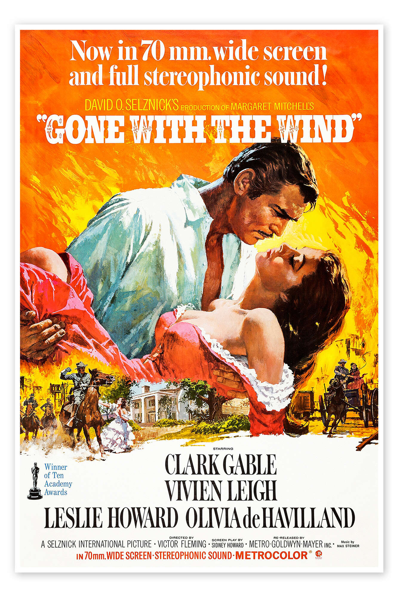
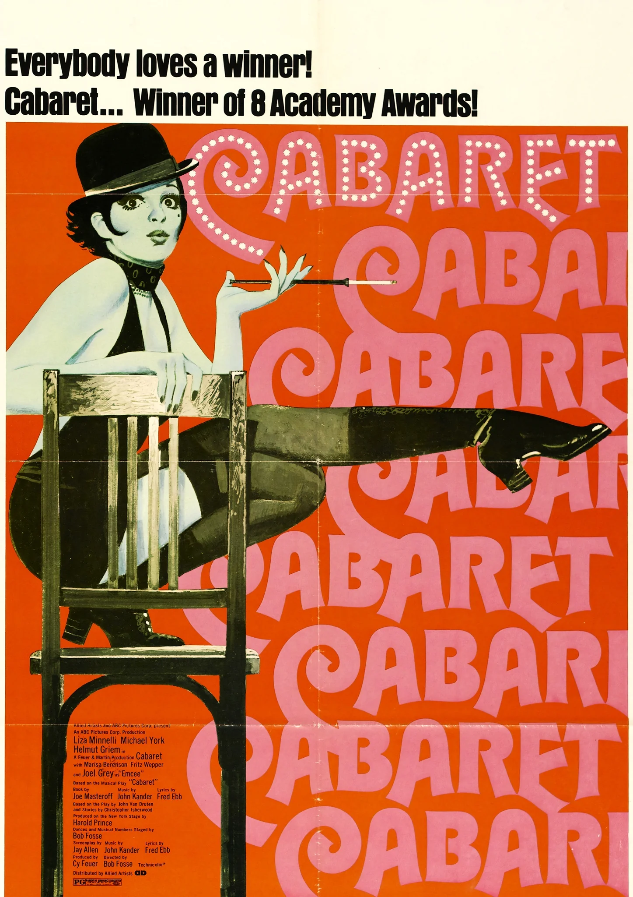
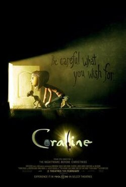

Pearl Harbor
Drama romántico ambientado durante el ataque japonés a Pearl Harbor en 1941. Dos pilotos estadounidenses y una enfermera viven una intensa historia de amor marcada por la guerra y la tragedia..

El gran escape
Durante la Segunda Guerra Mundial, prisioneros aliados planean una ambiciosa fuga masiva desde un campo de prisioneros nazi utilizando ingenio, trabajo en equipo y valentía.

My Best Friend's Wedding
Una crítica gastronómica descubre que está enamorada de su mejor amigo justo cuando él anuncia que se va a casar, por lo que intenta sabotear la boda antes de que sea demasiado tarde.

Only you
Una mujer obsesionada con el destino viaja a Italia buscando al hombre cuyo nombre cree que está ligado a su verdadera alma gemela.

When Harry met Sally
Dos amigos se conocen durante años mientras intentan responder una pregunta clásica: ¿pueden un hombre y una mujer ser solo amigos sin enamorarse?

You´ve got mail
A romantic comedy about two business rivals who unknowingly fall in love via an anonymous email romance. While they despise each other in real life, they become each other's confidants online.

Gone with the wind
It follows Scarlett O'Hara, a selfish, resilient Southern belle, who fights to survive, protects her plantation Tara, and obsessively chases Ashley Wilkes, neglecting her tumultuous romance with Rhett Butler.

Anne of Green Gables (1985)
Una imaginativa huérfana es adoptada por dos hermanos en la isla Príncipe Eduardo y transforma sus vidas con su creatividad, sensibilidad y optimismo.

Hello, Dolly!
Una carismática casamentera viaja a Nueva York para encontrar pareja a otros… mientras descubre inesperadamente su propia oportunidad de amor.

The Sound of Music
Una joven institutriz llena de energía cambia la vida de una familia austríaca mediante la música y el afecto, mientras Europa se enfrenta al avance del nazismo.

Mientras dormías
Una solitaria empleada del metro salva a un hombre de un accidente y, por un malentendido, termina siendo considerada su prometida mientras él permanece en coma.

El espejo tiene dos caras
Una profesora carismática acepta un matrimonio basado en la amistad intelectual, pero pronto descubre que también desea pasión y conexión emocional.

Memories of Murder
Basada en hechos reales, sigue a detectives coreanos que investigan una serie de asesinatos mientras luchan contra la falta de pistas y sus propios errores.

Cabaret
En el Berlín previo al ascenso del nazismo, una cantante de cabaret vive entre el glamour, el amor y la decadencia mientras la realidad política se vuelve cada vez más oscura.

El Príncipe de Egipto
Relato animado de la vida de Moisés, desde su crianza como príncipe egipcio hasta su misión de liberar al pueblo hebreo de la esclavitud.

Coraline
Coraline Jones, una niña aventurera que, al mudarse a una nueva casa, encuentra una puerta secreta a un mundo paralelo. Esta realidad parece una versión mejorada de su vida, pero pronto descubre secretos siniestros y debe enfrentar a la "Otra Madre" para salvar a su verdadera familia.